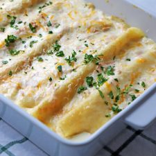

Panqueques con queso y jamon
Ingredientes
- 3/4 taza de harina (120 grs)
- 1 1/2 tazas de leche (375ml)
- 1/2 cucharadita de sal
- 3 huevos
- 3 tazas de queso de su gusto (yo usé una mezcla de mozarella con cheddar.
- 1 taza de jamón de pavo u otro cortado en trozos pequeños
- 2 tazas de crema líquida (500ml)
- Sal y pimienta a gusto
- Queso parmesano
- Ciboulette o perejil picado
Preparacion
- En una licuadora unir todos los ingredientes.
- Luego en un sartén idealmente antiadherente colocar un poco de aceite, puede ayudarse con algo para esparcirlo.
- Cuando el sartén esté caliente colocar 1/4 taza de la mezcla.
- Rápidamente distribuir la mezcla por todo el sartén. Dejar cocinar hasta que se desprenda de los costados y darlo vuelta. Cocinar unos 30 segundos más.
- Preparar todos los panqueques. Pueden salir unas 12 unidades.
- Colocar cada panqueque en una fuente que pueda ir al horno.
- Llevar al horno por 15 minutos a 350°F (180°C).